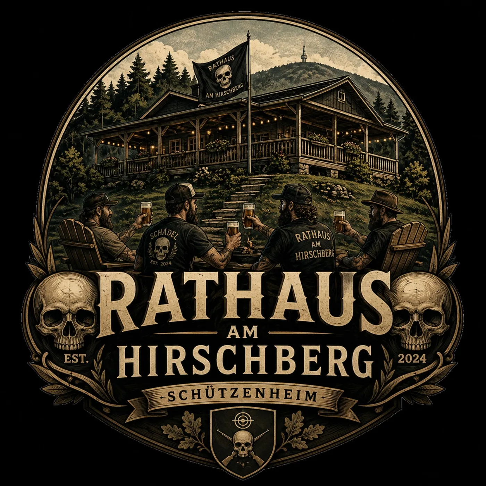

👑
Marcus
Bürgermeister
Wenn es am Hirschberg ein letztes Wort gibt, dann kommt es meist von Marcus. Er wacht über Ordnung, Zusammenhalt und die Stimmungslage – vorausgesetzt, das Glas ist nicht leer.
Offiziell inoffiziell · Est. 2024
Kein richtiges Rathaus. Aber mit den wichtigsten Gesetzen, ehrwürdiger Veranda, gepflegter Ratstradition und ausreichend Grundnahrungsmitteln für sachliche Beschlüsse.
Das Rathaus am Hirschberg ist ein Ort der Gemeinschaft, der gepflegten Beratung und der spontanen Amtsstunde am Hang. Hier regieren Freundschaft, Respekt, Humor und gesunder Menschenverstand.
Ein Garten-Grundstück mit schöner Hütte, Veranda und großer Amtswürde.
Nicht im Bundesgesetzblatt, aber dafür im Herzen fest verankert.
Regelmäßig am Lagerfeuer. Tagesordnung: Bier kalt halten und Probleme warm lösen.
Die wichtigste Behörde des Hauses. Zuständig für Motivation und Diplomatie.
Zwischen Veranda, Lagerfeuer und gepflegter Getränkekultur lenkt dieser Kreis die Geschicke des inoffiziell offiziellen Rathauses.
Bürgermeister
Wenn es am Hirschberg ein letztes Wort gibt, dann kommt es meist von Marcus. Er wacht über Ordnung, Zusammenhalt und die Stimmungslage – vorausgesetzt, das Glas ist nicht leer.
Ministerin für gute Laune
Mit feinem Gespür für Stimmung und dem richtigen Getränk zur richtigen Zeit sorgt Claudia dafür, dass aus hitzigen Gesprächen wieder gesellige Runden werden.
Weiser Ältester
Roland ist die ruhige Konstante in einem System, das selten ruhig ist. Er wird gefragt, wenn keiner weiter weiß – oder alle glauben, sie wüssten es besser.
Amtsleiter
Gesellig, trinkfest und selten allein anzutreffen. Matthias gehört fest zum Inventar des Hirschbergs und kümmert sich um alles, was organisiert werden sollte – und vieles, was einfach passiert.
Sicherheitsbeauftragte
Kira hat alles im Blick. Besucher, Bewegungen und Grillgut werden kontrolliert. Unbestechlich ist sie nicht – außer vielleicht unter ganz bestimmten Bedingungen.
Feierlich vorzutragen bei besonderen Ratssitzungen, niedrigem Getränkestand oder überraschend guter Stimmung.
Unser Rathaus am Hirschberg,
geheiligt werde dein Lagerfeuer.
Deine Sitzung komme, dein Beschluss geschehe,
wie auf der Veranda, so auch am Grill.
Unser tägliches Bier gib uns heute,
und vergib uns unsere Beschlüsse,
wie auch wir vergeben denen, die noch nichts nachgelegt haben.
Und führe uns nicht in leere Gläser,
sondern erlöse uns von schlechter Laune.
Denn dein ist die Veranda, die Glut und die Geselligkeit.
In Ewigkeit. Prost.
Die Öffnungszeiten richten sich nach Wetterlage, Anwesenheit, Vorrat und spontaner Beschlussfähigkeit.
Ab Sonnenuntergang bis „nur noch eins“ mehrfach widerlegt wurde.
Ganztägige Bereitschaft bei gutem Wetter, Grillduft oder sichtbarer Rauchentwicklung.
Nachbesprechung, Aufräumprüfung und stille Auswertung vergangener Beschlüsse.
Amtlich verkündet, gelegentlich erweitert und grundsätzlich mit einem Augenzwinkern zu verstehen.
Bier schützt vor Durst, schlechter Laune und trockenen Kehlen.
Ein Williams belebt die Geister und fördert gute Ideen.
Obstler hilft immer: bei Kälte, bei Wärme, bei Freude und bei Leid.
Trollinger stärkt die Gemeinschaft und den Gesprächsfluss.
Lemberger sorgt für Standhaftigkeit bei allen Abstimmungen.
Rosé ist die diplomatische Lösung in allen Fragen.
Weiß- oder Weißherbst bringt Klarheit in trübe Angelegenheiten.
Ab 22 Uhr entscheidet nicht mehr der Kopf, sondern das Herz – und manchmal der Wirt.
Ein Gastbeitrag zum Gemeinwohl ist stets willkommen.
Widerspruch ist möglich, aber nur mit triftigem Getränkebeweis.
Auf der Veranda werden Streitigkeiten beigelegt, nicht begonnen.
Wer ein leeres Glas sieht, hat unverzüglich Maßnahmen einzuleiten.
Sobald Feuer brennt, gilt die Runde als beschlussfähig.
Änderungen sind möglich, sofern die Mehrheit nickt.
Jeder Besucher wird geprüft. Leckerlis beschleunigen Verfahren.
Bei Engpässen tritt der Beschaffungsrat unverzüglich zusammen.
Bei unklaren Abstimmungen gilt sichtbare Heiterkeit als Zustimmung.
Bei schlechtem Wetter verlagert sich die Sitzung unter Dach.
Rolands Rat ist nicht immer verbindlich, aber meistens nicht verkehrt.
Ein ehrliches Prost ersetzt lange Reden und beendet unnötige Tagesordnungspunkte.

Die Ratssitzungen finden regelmäßig und situationsabhängig am Lagerfeuer statt. Anträge werden mündlich eingebracht, Beschlüsse per Zustimmung, Kopfnicken oder Nachschenken gefasst.
Die offizielle Übersicht der wichtigsten Amtsmittel.
| Getränk | Amtliche Funktion | Empfohlene Anwendung |
|---|---|---|
| Bier | Grundversorgung | Bei Ankunft, Sitzung und Feierabend |
| Williams Christ | Geistige Erhellung | Nach Beschlussfassung |
| Obstler | Universalmittel | Bei jeder Wetterlage |
| Trollinger | Gemeinschaftspflege | Zu ernsten Gesprächen |
| Lemberger | Standhaftigkeit | Bei schwierigen Entscheidungen |
| Rosé | Diplomatie | Wenn keiner streiten will |
| Weißherbst | Klarstellung | Bei unklarer Lage |
Amtlich geschätzter Versorgungsstatus. Angaben ohne Gewähr, aber mit hoher Dringlichkeit.
Kritisch – Nachschub empfohlen.
Stabil – für Beschlüsse geeignet.
Ausreichend – diplomatisch verwendbar.
Sitzungsfähig – Lagerfeuer genehmigt.
Auszüge aus dem Archiv. Lücken im Protokoll sind kein Fehler, sondern gelebte Tradition.
Lösung: Neues Bier kaltgestellt. Ergebnis: Problem vollständig vertagt.
Einstimmig angenommen. Gegenstimmen wurden wegen Hunger nicht berücksichtigt.
Begründung: Überdacht, gemütlich und strategisch nah an der Getränkekammer.
Für Bürger, Gäste, Ratsmitglieder und alle, die zufällig gerade da sind.
Bei sichtbarer Glut ist das Betreten des Sitzungsbereichs nur mit guter Laune gestattet.
Leere Flaschen sind dem zuständigen Entsorgungs- oder Nachschubbeauftragten zu melden.
Die Veranda gilt bis auf Widerruf als offizieller Regierungssitz des Hirschbergs.
Grundregeln für respektvolles, würdiges und ausreichend versorgtes Zusammensein.
Wer auf der Veranda sitzt, wird gehört – auch wenn nicht immer alles verstanden wird.
Wer das letzte nimmt, meldet es. Wer Nachschub bringt, steigt im Ansehen.
Die Glut wird gepflegt. Wer Holz nachlegt, leistet aktiven Verwaltungsdienst.
Für besondere Lagen mit erhöhter Dringlichkeit.
Sofortige Beschaffung einleiten. Zuständigkeit: jeder mit Fahrzeug, Zeit oder schlechtem Gewissen.
Veranda aktivieren, Sitzplätze sichern, wichtige Getränke aus dem Gefahrenbereich entfernen.
Feuer nachlegen, Runde nachfüllen, Tagesordnung vertagen.
Amtsstunden nach Wetterlage, Anwesenheit und Getränkestand.
Rathaus am Hirschberg · Schützenheim
Veranda, Lagerfeuerplatz und Sitzungsgelände
Angaben gemäß § 5 TMG
Matthias Schädel
Hirschberg 1
74182 Obersulm
Deutschland
E-Mail: matthias.schaedel@gmail.com
Hinweis: Diese Webseite ist ein privates Spaßprojekt. Das „Rathaus am Hirschberg“ ist kein offizielles Rathaus und keine öffentliche Behörde.